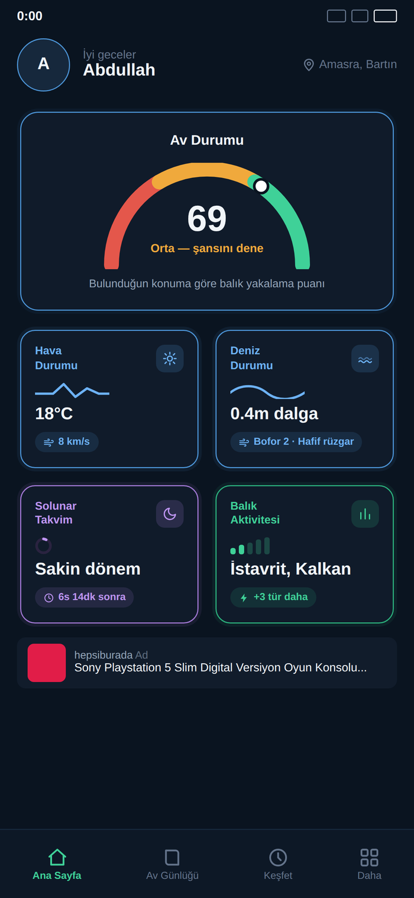
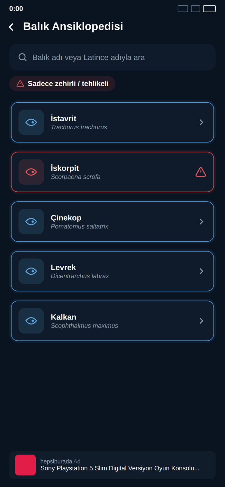
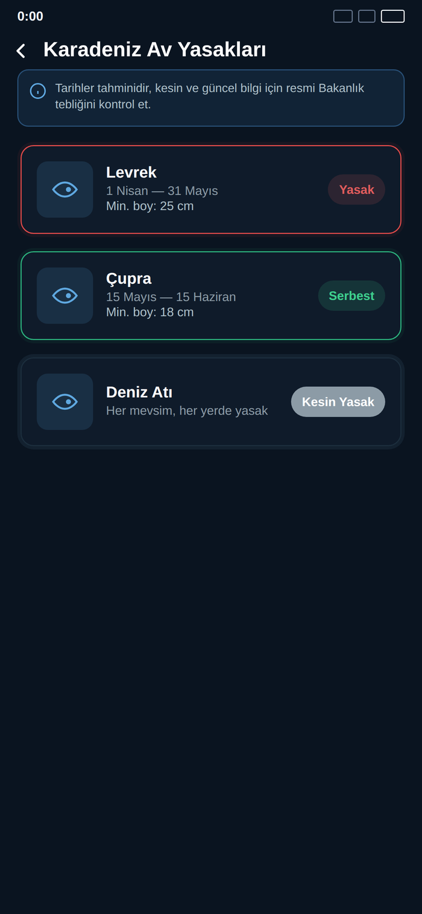
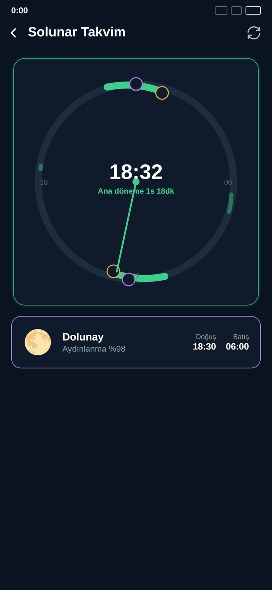
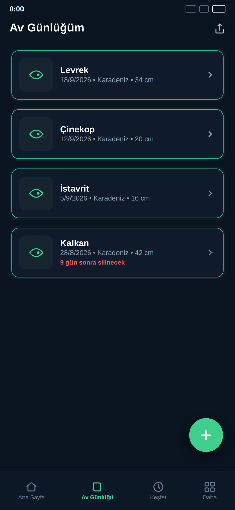

Hava, deniz ve ay durumunu tek bir puanda birleştiren Av Durumu göstergesiyle çıkmadan önce şansını öğren; av yasağı takvimi ve balık ansiklopedisiyle de yasal ve güvenli avlan.

Rüzgar, basınç trendi ve solunar dönemi eşit ağırlıklı bir puana dönüştürülür — 0'dan 100'e, kırmızı/amber/yeşil yarım daire gösterge üzerinde. "Zayıf", "Orta", "İyi" veya "Mükemmel" etiketiyle o an avlanmanın ne kadar mantıklı olduğunu anında anlarsın.

Her tür için minimum av boyu, mevsimsel av yasağı, önerilen olta/yem/teknik ve görüldüğü bölgeler tek ekranda. Zehirli veya tehlikeli türler kırmızı uyarı rozetiyle ayrıca işaretlenir.
Karadeniz, Marmara, Ege ve Akdeniz için ayrı ayrı — hangi türün ne zaman yasaklı, ne zaman serbest olduğunu gör. Asgari boy bilgisiyle birlikte, tebliğ tarihine kadar takip edebileceğin net bir liste.


Ay doğuş/batış saatlerine göre hesaplanan ana ve yardımcı dönemler, 24 saatlik dairesel bir çark üzerinde gösterilir. Balıkların geleneksel olarak en aktif olduğu pencereleri önceden bilerek avını planla.
Fotoğraf, tür, tarih, bölge, boy ve ağırlıkla her avını arşivle; konumu haritada işaretleyip aynı noktaya tekrar dönebilirsin. Kayıtlarını tek dokunuşla yedekleyip paylaşabilirsin.

Ücretsiz indir, konumuna göre balık tutma şansını ilk avından itibaren gör.